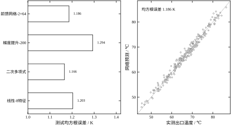
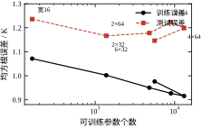
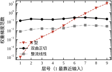
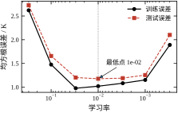
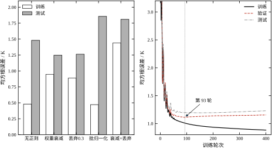
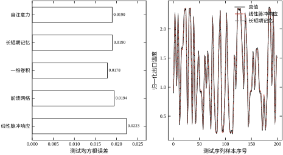

第26章的做法是“先造特征、再选模型”：把阀位除以流量、把入口温度乘上这个比值，凑出八列输入，再让线性回归、决策树、随机森林、梯度提升各试一遍。这套流程在换热器这个对象上能到 1.18 K 左右，离噪声下限 1.077 K 只差 0.1 K，看起来已经很接近极限。但这份精度是贴着对象造的：比值项来自饱和非线性的解析式，平方项来自阀门特性的经验，换了对象就得重造一遍。
真实的工厂里对象不止一个。一台加热炉有炉膛温度、氧含量、排烟温度三条软测量；一套精馏塔有塔顶、塔底、回流量三个回路；每条软测量背后的非线性形态都不一样。人工特征的成本随对象数量线性增长，而工况组合的数量随测点数量指数增长，靠工程师逐个对象地猜组合，迟早跟不上。
深度学习换了一个思路：不告诉模型“该看什么组合”，只给它足够的原始量测和一个可微的结构，让它在训练过程中自己学出中间表示。第一层学到的可能是“阀位偏大时温度对流量更敏感”这类局部形状，第二层把这些形状组合成饱和曲线，输出层再把它折算成温度。“学表示”代替“造特征”，是这一章与第26章最根本的区别；第26章的模型族是给定的，本章的模型族本身可以被训练塑形。
代价也要先摆清楚。第一，样本需求高：网络的参数动辄几千，而第26章的线性模型只有九个系数。第二，算力与工程栈更重：训练要 GPU 或至少多核 CPU，部署要额外的推理运行时。第三，可解释性下降：线性模型的系数能读出“阀位每增加 0.1，温度升高多少开”，网络的权重读不出这句话。第四，故障诊断更难：模型输出偏了，可能是数据漂移、可能是某一层饱和、也可能是权重文件版本不对。这一章的目的是把这四笔账算清楚，而不是宣布深度网络更好。
四笔账在本章这个具体任务上的数额可以先给出来，免得读者以为它们是抽象的顾虑。样本需求：4801 个参数用了 750 段训练样本，样本量少两成（600 段），测试误差就从 1.186 K 抬到 1.196 K，再少到 100 段就崩到 1.481 K。算力：单核 CPU 上整个脚本约五十秒，这条其实不成问题，真正贵的是人——调参、排障、版本管理都要投入熟悉深度学习的人。可解释性：线性模型的九个系数可以逐条与工艺经验核对，网络的 4801 个权重不能，只能退而求其次地看敏感度与部分依赖。诊断：一个输出偏差可能来自四五个环节，而线性模型只有“系数错了”和“数据超范围”两种可能。这四笔账里只有第二笔能用钱解决，其余三笔要靠工程纪律。
沿用第26章的换热器出口温度软测量。可测的是阀位、入口温度、流量、压力，要估的是出口温度；准稳态关系为入口温度加上热源与入口温差乘以饱和因子，饱和因子对阀位与流量之比呈指数饱和。本章重新抽了 1000 段样本，其中 750 段训练、250 段测试；出口温度覆盖 43.0 到 86.5 ℃，均值 65.8 ℃；叠加的环境扰动与传感器噪声合计方差 1.16 K²，对应均方根 1.077 K。这个 1.077 K 是任何模型都压不下去的硬底，后文所有误差都要跟它对照着读。
输入八列：阀位、入口温度、流量、压力四个原始量，加上阀位比流量、温升组合、阀位平方、流量平方四个人工组合量。这里有一个刻意的安排——八列里已经包含了四个人工特征。深度网络本来不需要它们，保留是为了让线性模型这个对手处在最好状态：如果连“带着答案考试”的线性模型都赢不了网络，那网络的收益才站得住。
第一个结果：精度上没有碾压。前馈网络 1.186 K，二次多项式 1.166 K，线性 1.203 K，梯度提升 1.294 K。四个模型落在 1.17 到 1.29 K 的窄带里，最好与最差只差 0.13 K，不到噪声下限的两成。在这个任务上，深度网络只是并列第一，没有出现“用了深度网络误差减半”的质变。原因不难找：对象的非线性是单调饱和，八个特征已经把主要形状表达出来了，网络没有多少剩余空间可挖。
第二个结果：加深不降误差。把网络从一层十六宽加到四层六十四宽，参数量从 161 涨到 13121，翻了八十倍，测试误差从 1.236 K 变成 1.199 K，中间还来回摆动；六层三十二宽反而最好，1.146 K。与此同时训练误差一路降到 0.916 K，测试误差不跟着降。这就是第26章讲过的方差项，只是换了一个模型族：容量越大越容易记住训练集的噪声，而测试集不认这份记忆。
第三个结果：序列任务上结构差异明显。同一个窗口预测任务，线性脉冲响应 0.0223，前馈网络 0.0194，一维卷积 0.0178，长短期记忆与自注意力都是 0.0190。非线性结构把误差压低了两成，但三种非线性结构之间只差 7%，而它们的参数量都在 1800 到 2700 之间。换句话说，起决定作用的是“能不能表达非线性”，而不是“用了哪种时髦结构”。
这三条先导结果给本章定了一个务实的基调：深度学习在工业软测量上的收益通常是百分之十几，不是数量级；真正决定成败的是数据质量、正则化与验证纪律，而不是网络堆了多深、用了多少注意力头。后面七节的任务，就是把这句话拆成可操作的判据。
还要补一句读法：这四个数都来自单次运行，不能按小数点后第三位去排名。前馈网络 1.186 K 与二次多项式 1.166 K 相差 0.02 K，落在 0.05 K 的门限之内，正确的写法是“两者分不出来”，而不是“多项式以微弱优势胜出”；梯度提升 1.294 K 与最好成绩差 0.128 K，超过门限一倍半，才可以下“它在这个划分上更差”的判断。同一张表里的数字，能下的结论强度并不相同，这是第26章反复强调的纪律，本章继续沿用。
第26章回答“给定一组特征，选哪个模型族、怎么评估”；本章回答“特征本身能不能被学出来，以及学出来的那个东西怎么训练”。两章共用同一份换热器数据、同一条留出划分纪律、同一个噪声下限，但第26章的模型族是凸的或分段常数的，本章的模型族是非凸的，这一条差异带来后面所有的麻烦：初始化、局部极小、梯度消失、对学习率敏感。
第28章接着讲网络的具体形态与训练工程：残差连接、归一化的位置、学习率调度、混合精度、分布式训练。本章只把最基础的构件搭起来——前馈、卷积、循环、注意力各讲一个最小可用的版本，目的是让读者能读懂第28章的改进在改什么，而不是替代它。
这条分界有一个直接后果：本章不重复讲评估方法。交叉验证怎么切、指标怎么选、两个模型差多少才算有差别，第26章已经讲完，本章只在开头复用那三条口径。同样，本章也不讲特征怎么造——八个输入里那四个人工组合量是第26章的遗产，本章保留它们只是为了给线性模型一个公平的对手。读者若跳过第26章直接读本章，会缺两样东西：噪声下限的来历，以及 0.05 K 门限的来历，这两样恰好是读懂所有实验表的前提。
第29章讲无约束优化算法，会推导梯度下降、动量、共轭梯度与拟牛顿法的收敛性质。本章会用到这些算法，但只把它们当成“给定的一步更新规则”，不重复推导；凡是涉及“为什么这个算法收敛”的问题，一律指回第29章，Adam 的自适应步长不在其中，本章仍按给定规则使用。第30章的凸优化则提供了对照：本章的实验里，二次多项式那个凸模型往往就是最强的对手，这个反差本身就是一条结论。
还有两条边界要说明。第一，本章不讨论图像卷积核的设计技巧，也不讨论大规模预训练与迁移学习，那些属于专门的视觉与基础模型教材。第二，本章的序列部分只讲结构，不展开系统辨识理论；脉冲响应、ARX、子空间方法见第16到22章。本章拿线性脉冲响应当序列任务的基线，正是为了把“结构收益”和“辨识收益”分开看。
本章围绕四个问题展开。问题一：一个网络到底在算什么？ 它是多层复合函数，反向传播是链式法则的矩阵形式；把这两句话说清楚，后面的一切推导都是它的推论。问题二：训练为什么会失败？ 三种典型失败——梯度消失、学习率不当、初始化尺度不对——都能用梯度范数与更新量的量级来诊断，本章给出可测量的判据。问题三：怎么防止过拟合？ 权重衰减、丢弃、批归一化、早停四件工具各管一段，本章用 100 段小样本把它们逼到极限，看谁真的有用。问题四：什么时候值得用深度学习？ 这个问题没有普适答案，但有可操作的边界：样本量、非线性强度、部署条件三条。
对应到节次：27.2 定义基本构件与记号，27.3 推反向传播、梯度消失、初始化与容量，27.4 落到张量形状、训练循环、数值稳定与部署，27.5 讲工程边界，27.6 用八组实验把前面的每条论断都钉在一个数字上，27.7 收束。
三条口径先立在这里。第一，所有误差都是同一划分上的测试均方根误差，单位开尔文，与第26章一致。第二，结构对照时训练预算对齐：同样的轮数、同样的批大小、同样的优化器，避免“某个结构多训了两百轮”这种不公平。第三，单次运行、固定种子，差异小于 0.05 K 不当结论；这个阈值来自第26章实验 D 测出的划分波动——决定系数标准差 0.0008 折算到误差约 0.03 K，这里取 0.05 K 作保守门限。凡是小于它的名次变化，本章都按“分不出来”处理。
这一节的目的是让读者能自己复现每一个数字，所以把与“模型好不好”无关、但会改变结果的琐碎设定先写清楚。
运行环境：单机 CPU，PyTorch 单线程（torch.set_num_threads(1)），随机种子固定为 20261027。单线程不是为了省事，而是为了让浮点累加顺序可重复——多线程下归约的加法次序每次可能不同，同一份代码两次跑出的误差在第三位小数上会抖，虽然不影响结论，却会让读者以为自己复现错了。
单次运行，不报标准差。真正的做法是换十个种子各训一次、报均值与标准差，但那是十倍的计算量，而本章要比较的结构有二十多个。折中的办法是用统一门限代替统计检验：把第26章测到的划分波动 0.03 K 放大到 0.05 K，只要两个模型的差值在这个门限内，就写“分不出来”。这条约定比报一个好看的标准差更诚实，因为它把“不敢下结论”明确写了出来。
误差一律用测试集均方根误差，不用决定系数。决定系数依赖输出方差，静态任务的输出跨 43.0 到 86.5 ℃，序列任务的标准差只有 0.65，两者的 R^2 不可比；而均方根误差的量纲就是输出量纲，静态任务能直接与噪声下限 1.077 K 对照，序列任务能直接与噪声 0.01 对照。只有同量纲的数才能跟噪声下限做减法，这是本章反复用平方相减核算欠拟合余量的前提。
结构对照的预算怎么给。给每个结构都扫到各自最优是不现实的，也会引入“谁的调参运气好”这个新变量。本章的做法是：前馈网络固定学习率 8\times10^{-3} 或 10^{-2}，轮数在 150 到 400 之间按实验目的取；序列任务五种结构统一用 Adam、学习率 5\times10^{-3}、批大小 128、训练 40 轮。这套预算对卷积与循环未必最优，但它们之间的差距本就在门限附近，再调也改变不了“结构差异小于线性与非线性差异”这个结论。
最后一件不做的事：不追排行榜。本章不打算把换热器任务的误差压到最低，也不打算在 GPU 上试更大的模型。原因很简单——如果结论依赖于“多训两天”，那它就不是一条可以教给读者的规律。凡是需要精细调参才能成立的收益，本章一律标注为“未证实”。
一个 L 层前馈网络就是 L 个仿射变换与 L 个逐元素非线性的交替复合。把第 \ell 层的宽度记作 d_\ell，输入 \mathbf{x}\in\mathbb{R}^{d_0}，则
\mathbf{h}_0=\mathbf{x},\qquad \mathbf{h}_\ell=\varphi_\ell\!\left(\mathbf{W}_\ell\mathbf{h}_{\ell-1}+\mathbf{b}_\ell\right),\qquad \hat y=\mathbf{w}^{\mathsf T}\mathbf{h}_L+b \tag{27-1}
其中 \mathbf{W}_\ell\in\mathbb{R}^{d_\ell\times d_{\ell-1}}，\mathbf{b}_\ell\in\mathbb{R}^{d_\ell}，\varphi_\ell 是逐元素作用的激活函数。本章实验里“两层六十四宽”指的是 L=2、d_1=d_2=64，最后接一个标量输出；这个网络有 4801 个可训练参数，输入八维、输出一维。
这个 4801 可以手算核对，也值得手算一次，因为它把“参数量从哪来”讲清楚了。第一层 8\times64+64=576，第二层 64\times64+64=4160，输出层 64\times1+1=65，合计 576+4160+65=4801。第二层一项就占了八成七，这就是“参数量随宽度平方增长”的具体形态：宽度翻倍，层内参数变四倍。若把同样的容量摊成四层三十二宽，参数量是 8\times32+32 加三个 32\times32+32，再加 32+1，合计 288+3168+33=3489——比两层六十四宽少两成七。这条算术是第 27.3.7 节“深比宽省参数”的原型。
这个定义看起来平淡，但已经包含了后面所有讨论的种子。第一，网络对参数是非线性的，对输入却是分段线性的（当激活取整流线性时）：固定参数后，\hat y 是 \mathbf{x} 的分段线性函数，折点由各层的加权和过零点决定。第二，层与层之间只有矩阵乘法，所以参数量随宽度平方增长、随深度线性增长，这一点在第 27.3.7 节会用来解释“为什么深比宽省参数”。第三，激活函数是把仿射变换变成非线性映射的唯一来源：去掉全部 \varphi，多层网络会塌缩成一个线性映射，这也是初学者最常见的实现错误之一。
关于表达能力，有一条常被误读的结论：单隐藏层网络可以以任意精度逼近紧集上的连续函数，只要宽度足够。这句话是对的，但它没有说宽度需要多大——对某些函数，所需宽度随输入维数指数增长。深度带来的不是“能逼近更多函数”，而是同样的函数可以用少得多的参数逼近，因为中间层的结果可以被后面多层复用。换热器的饱和非线性正好是这种可复用的结构：第一层学出“阀位与流量之比”这个中间量，第二层只需对这个中间量做一次一维非线性变换。
表 27-1 把本章用到的记号集中列出，后文不再逐条解释。
表 27-1 本章记号
| 记号 | 含义 | 本章取值 |
|---|---|---|
| d_\ell | 第 \ell 层宽度 | 8–64 |
| L | 隐藏层数 | 1–8 |
| \mathbf{W}_\ell,\mathbf{b}_\ell | 第 \ell 层权重与偏置 | 可训练 |
| \varphi | 激活函数 | 整流线性／双曲正切／S 型 |
| B | 批大小 | 128（静态任务为全批） |
| \eta | 学习率 | 3\times10^{-4}–3\times10^{-1} |
| \lambda | 权重衰减系数 | 0 或 10^{-2} |
| J | 训练损失 | 均方误差 |
表格里最值得注意的是批大小一列：静态任务只有 750 段样本，全批更新一次只需几毫秒，所以本章的静态实验都取全批；序列任务有六千个窗口，才改用 128 的小批。批大小不是超参数里的装饰品，它决定了梯度的噪声水平与每轮的更新次数，第 27.4.3 节会给出选择依据。
记第 \ell 层的预激活为 \mathbf{z}_\ell=\mathbf{W}_\ell\mathbf{h}_{\ell-1}+\mathbf{b}_\ell，损失对它的灵敏度为 \boldsymbol{\delta}_\ell=\partial J/\partial\mathbf{z}_\ell。对输出层直接用链式法则，得到
\boldsymbol{\delta}_L=\frac{\partial J}{\partial\hat y}\odot\varphi_L'(\mathbf{z}_L) \tag{27-2}
对隐藏层，把第 \ell+1 层的灵敏度经权重矩阵转置回传，再乘上本层激活的导数：
\boldsymbol{\delta}_\ell=\left(\mathbf{W}_{\ell+1}^{\mathsf T}\boldsymbol{\delta}_{\ell+1}\right)\odot\varphi_\ell'(\mathbf{z}_\ell), \qquad \ell=L-1,\dots,1 \tag{27-3}
参数梯度则由灵敏度与本层输入的外积给出。对含 B 个样本的小批取平均：
\frac{\partial J}{\partial\mathbf{W}_\ell}=\frac{1}{B}\sum_{i=1}^{B}\boldsymbol{\delta}_{\ell}^{(i)}\left(\mathbf{h}_{\ell-1}^{(i)}\right)^{\mathsf T}, \qquad \frac{\partial J}{\partial\mathbf{b}_\ell}=\frac{1}{B}\sum_{i=1}^{B}\boldsymbol{\delta}_{\ell}^{(i)} \tag{27-4}
这三条式子说明反向传播不是一种新算法，而是链式法则在计算图上的执行顺序：先前向保存各层激活，再从输出往回逐层乘雅可比。它的计算量与前向同阶，因为每层只做一次矩阵乘法；代价在内存——要保存全部中间激活，显存占用随深度线性增长。这也是为什么第 28 章讲梯度检查点：用重算换显存。
式 (27-2) 到 (27-4) 是否正确，可以直接用中心差分验证。本章实验 D 在一个四层小网络上做了这件事：119 个参数里随机抽查 40 个分量，解析梯度与数值梯度的最大相对误差为 3.45\times10^{-8}，中位数 1.11\times10^{-9}。这个量级正好是双精度舍入误差与差分截断误差的平衡点，说明实现没有错；如果误差落在 10^{-2} 量级，通常是某一层的激活导数写错，或者忘了转置。
反向传播里唯一逐元素作用的部分是 \varphi'，它的取值直接决定梯度能不能传回去。本章用到的三种激活及其导数如下：
\sigma(z)=\frac{1}{1+e^{-z}},\quad \sigma'(z)=\sigma(z)\bigl(1-\sigma(z)\bigr)\le\frac14;\qquad \tanh'(z)=1-\tanh^2(z)\le 1;\qquad \mathrm{ReLU}'(z)=\mathbb{1}[z>0] \tag{27-5}
S 型的导数上界只有四分之一，双曲正切的上界是一，整流线性在正半轴的导数恒为一。这三个上界就是第 27.3.2 节梯度消失分析的唯一输入：每回传一层，梯度最多被乘上一个不超过该上界的因子；八层下来，S 型最多衰减到 4^{-8}\approx1.5\times10^{-5}，双曲正切与整流线性则没有这个必然的指数衰减。
本章所有前馈实验默认取整流线性，只有在实验 C 里才把三种激活并排比较——因为激活不是本章要比较的变量，它只是一个默认配置。这样安排的好处是，实验 A、B、E、F、G 之间的差异不会被激活选择混淆。若要换激活，改动只有一行，但换完必须重扫学习率：不同激活的梯度量级不同，10^{-2} 在整流线性上合适，换成 S 型就明显偏大。把激活当成可插拔的零件，同时把学习率当成与它配套的参数，这是换激活时最容易漏掉的一半。
除了导数上界，三者还有两条工程差异。第一，S 型与双曲正切都是饱和的：输入绝对值大时导数趋零，权重再大也推不动；整流线性在正半轴不饱和，这也是它成为默认选择的直接原因。第二，S 型不是零中心的，输出恒正，导致同一层权重的梯度符号趋同，收敛走之字形；双曲正切零中心，但仍有饱和。整流线性的问题是负半轴梯度恒零，单元一旦落到“永远负”的区域就再也不更新，这叫死亡单元；泄漏整流线性把负半轴改成一个小斜率，本章实验 C 用的就是斜率 0.1 的版本。
回归任务的输出层不加激活，损失取均方误差：
J_{\mathrm{MSE}}=\frac{1}{B}\sum_{i=1}^{B}\left(\hat y_i-y_i\right)^2 \tag{27-6}
它的梯度是 2(\hat y_i-y_i)/B，与残差成正比，残差大时更新大、残差小时更新小，这正是第26章式 (26-4) 正规方程所对应的那个目标，只是这里用迭代而不是一次求解。用均方误差训练的网络输出的是条件均值，这一点与第26章“平方损失学条件均值”完全一致；如果噪声是重尾的，改用绝对误差会让输出转向条件中位数，代价是零点附近梯度不连续。
分类任务的输出层配 softmax，损失取交叉熵：
p_k=\frac{e^{z_k}}{\sum_{j=1}^{K}e^{z_j}},\qquad J_{\mathrm{CE}}=-\sum_{k=1}^{K}y_k\log p_k \tag{27-7}
其中 y_k 是独热标签。把两式合起来求导，会得到一个极简的结果：对 logit 的梯度就是 p_k-y_k，即“预测概率减标签”。这个形式与第26章逻辑回归的梯度 (26-9) 一模一样，不是巧合：softmax 加交叉熵就是多类别逻辑回归，而逻辑回归是一个没有隐藏层的网络。本章实验只做回归，但式 (27-7) 会在第 36 章的故障分类里直接用到。
式 (27-6) 在实际训练里并不直接作用在开尔文上。输出会先按训练集的标准差缩放，损失在无量纲空间里计算，报告误差时再乘回去。这样做有两个好处：一是学习率不必随输出量纲变化，同一组超参数能在温度、压力、流量上通用；二是梯度的量级被归一化，避免了“输出值域大、梯度就大”的隐性耦合。代价是那个缩放因子 s_y 必须随模型一起保存，漏掉它，推理结果会整体缩小或放大若干倍，而且误差曲线看起来仍然正常，只是数值全错——这是第 27.7.2 节把“标准化参数”单列一条的原因。
换热器的输入窗口是一段长度为 20 的序列，若把它展平后接全连接层，每个输出都要与 20 个时刻单独配一个权重，窗口里“第 3 步与第 7 步的关系”和“第 13 步与第 17 步的关系”会被当成两件无关的事。卷积把这条先验写进结构：同一个核在整段序列上滑动，权重共享。一维离散卷积写作
y_t=\sum_{j=0}^{K-1}w_j\,x_{t+j-\lfloor K/2\rfloor}+b, \qquad t=1,\dots,T \tag{27-8}
其中 K 是核长，本章取 5，即每个输出只看前后各两步。两个这样的卷积层中间夹一次两倍下采样，最后一层的感受野约为 13 步，已经能覆盖窗口里的大半个脉冲响应。参数共享带来两个直接好处：参数量从“窗口长度乘宽度”降到“核长乘通道数”，而且同一个特征在窗口内平移后仍然被识别。代价是卷积假设“同一种局部模式在任何位置含义相同”，对含有绝对时间标记的任务并不成立。
形状上还有一处必须交代：卷积会让序列变短。核长 5 不加填充时，每个位置少四个输出，两层下来二十步只剩十二步；本章统一用两端各补两步的填充，使输出长度保持二十，再做两倍池化降到十，最后对整段取平均压成一个通道向量。填充方式决定了边界时刻的取值是否可信，补零会让段首段尾的响应偏小，补边界值或镜像更合理；本章的窗口足够长，边界效应落在前两步与后两步，对结果影响可以忽略。
序列模型的另一种思路是不用窗口，而是把历史压进一个状态向量，逐步递推：
\mathbf{h}_t=\tanh\!\left(\mathbf{W}_h\mathbf{h}_{t-1}+\mathbf{U}_x\mathbf{x}_t+\mathbf{b}\right) \tag{27-9}
这个式子的梯度要沿时间连乘 \partial\mathbf{h}_t/\partial\mathbf{h}_{t-1}，连乘二十步就是二十个矩阵的乘积，与深层网络的梯度消失是同一个机制，只是“深度”变成了时间长度。长短期记忆用三个门把这个问题绕开：遗忘门决定旧状态留多少、输入门决定新信息写多少、输出门决定当前读出多少，并且状态更新走一条加法路径 \mathbf{c}_t=\mathbf{f}_t\odot\mathbf{c}_{t-1}+\mathbf{i}_t\odot\tilde{\mathbf{c}}_t。加法路径对梯度的雅可比是 \mathbf{f}_t 而不是矩阵乘积，只要遗忘门接近一，梯度就能沿时间近乎无损地传回去。本章的长短期记忆取隐藏宽度 24、单层，参数量 2617。
这个 2617 同样可以手算：四个门的输入权重与循环权重是 4\times24\times(1+24)=2400，两套偏置各 96、合计 192，输出层 24+1=25，总数 2400+192+25=2617。门控的代价是参数翻四倍：同样宽度的普通循环层只有 24\times(1+24)+24=624 个参数，长短期记忆是它的四倍多。省下的不是参数，是训练轮数——用参数换可训练性，这是门控结构真正的交易。
注意力不递推状态，而是让每个时刻直接去“查”窗口内所有时刻：
\mathrm{Attn}(\mathbf{Q},\mathbf{K},\mathbf{V})=\mathrm{softmax}\!\left(\frac{\mathbf{Q}\mathbf{K}^{\mathsf T}}{\sqrt{d_k}}\right)\mathbf{V} \tag{27-10}
\mathbf{Q},\mathbf{K},\mathbf{V} 由同一段输入经三个线性映射得到，\sqrt{d_k} 的作用是把点积的方差归一到一，避免 softmax 进入饱和区。注意力的计算量与窗口长度的平方成正比，窗口 20 时只有 400 个权重，开销可以忽略；窗口拉到几千步时这一项就会成为瓶颈，这也是长序列模型要改稀疏注意力或分块的原因。本章用一个单层、两头的编码器，模型宽度 16、前馈 32，参数量 2593，与长短期记忆几乎相同——这样比较的才是结构，而不是参数量。
注意力的一个副作用值得提前说明：它对位置没有内在概念，同一段输入打乱顺序后，若不额外加位置编码，输出不变。本章的实现给每个时刻加了一组可学习的位置向量，长度固定为 20；这也意味着窗口长度一变，模型就得重训，工程上要提前把窗口定死。
网络参数量远大于样本量时，训练目标要加一项惩罚：
J_{\mathrm{tot}}=J_{\mathrm{MSE}}+\frac{\lambda}{2}\sum_{\ell}\left\|\mathbf{W}_\ell\right\|_F^2 \tag{27-11}
它等价于给权重加一个零均值高斯先验，\lambda 与噪声方差成正比、与先验方差成反比，这条对应关系第26章式 (26-18) 已经推过。落到梯度上，每次更新相当于把权重先乘一个小于一的因子再减去数据梯度，所以叫权重衰减。它对偏置不加惩罚，因为惩罚偏置只会让模型更难拟合均值，没有正则收益。
丢弃的做法是在训练时以概率 p 随机把隐藏单元置零，推理时用全部单元但把输出乘以 1-p。若记掩码为 \mathbf{m}，则
\tilde{\mathbf{h}}=\frac{\mathbf{m}\odot\mathbf{h}}{1-p},\qquad \mathbb{E}\left[\tilde{\mathbf{h}}\right]=\mathbf{h} \tag{27-12}
除以 1-p 是为了让训练与推理的期望一致，否则推理时的激活会整体偏大。丢弃等价于对指数多个子网络做隐式集成，这一点第 27.3.8 节会用方差的语言再讲一遍；它的代价是训练轮数要增加，因为每个批只更新了一部分通路。
批归一化把每个小批内同一维的预激活拉回零均值、单位方差，再用两个可学习参数恢复尺度：
\hat z=\frac{z-\mu_B}{\sqrt{\sigma_B^2+\epsilon}},\qquad \tilde z=\gamma\hat z+\beta \tag{27-13}
它的直接效果是让每层的输入分布不随前层权重漂移，从而允许更大的学习率。但批统计量在小批下噪声很大：本章实验 F 里批大小为 100，测试误差反而从 1.481 K 升到 1.857 K，说明它不是无条件的好东西，第 27.4.5 节会讨论什么时候该用、什么时候该改用层归一化。
卷积、循环、注意力看着是三套东西，其实都是式 (27-1) 的特例，差别只在“层内的线性组合怎么定义”。把它们放在同一副骨架上，后文就不必分别记三套语言。
卷积是共享权重、局部连接的层。同一个卷积核在窗口的每个位置复用，于是第 \ell 层第 j 个通道的预激活是 \sum_{k}\sum_{\tau=0}^{K-1}w_{jk\tau}h_{\ell-1,k}(t-\tau)。与全连接相比，它把“每个输入位置各有一套权重”换成了“所有位置共用一套权重”，参数量从 T\cdot d_{\ell-1}d_\ell 降到 K d_{\ell-1}d_\ell，代价是假设了平移不变——同一个波形在窗口的不同位置应当具有相同的意义。这个假设在窗口预测里成立：滞后三步的冲击与滞后五步的冲击，形状一样。
循环网络是沿时间展开的深层网络，且每层共用一套权重。把 \mathbf{h}_t=\varphi(\mathbf{W}\mathbf{h}_{t-1}+\mathbf{U}\mathbf{x}_t+\mathbf{b}) 沿 t 展开二十步，得到的就是一个二十层、权重完全相同的前馈网络。理解了这一点，梯度消失就顺理成章：反向传播要穿过二十次同样的 \mathbf{W}，特征值偏离一的成分会被反复放大或衰减。门控的作用是在这条链上开一条加法通道，让梯度可以少乘几个矩阵。
注意力是数据相关的加权平均，权重由查询与键的内积经 softmax 给出。它没有固定的连接模式，每一对位置之间的权重都由输入决定；所以它能一步跨过整个窗口，代价是计算量随窗口长度平方增长。窗口二十步时 T^2=400，与卷积的 KT=100 同量级；窗口扩到一千步，前者是一百万，后者才五千，这就是长序列必须换结构的原因。
把三句话并排看：卷积固定了“谁与谁相连”，循环固定了“按什么顺序传递”，注意力把“谁与谁相连”也交给数据决定。固定得越多，参数越省、样本效率越高；固定得越少，表达越灵活、样本需求越大。本章实验 H 里五种结构的误差挤在 0.0178 到 0.0223 之间，正是因为窗口短、任务简单，三条路都够用；换个任务，这条取舍才会显形。
把式 (27-2) 到 (27-4) 串起来看，一次完整的训练由三段组成。前向：从输入逐层算到输出，保存每层的 \mathbf{z}_\ell 与 \mathbf{h}_\ell。反向：从损失出发逐层算 \boldsymbol{\delta}_\ell，顺带算出各层梯度。更新：按优化器规则改权重。三段的计算量都是 O(\text{参数量})，反向因为要算两个矩阵乘（对输入的梯度与对权重的梯度）而比前向贵约一倍。这条“前向一比二”的经验值在估算训练算力时很好用：一次迭代的浮点运算量约为参数量的六倍（前向两倍加反向四倍）。
三段之间还有一个容易被忽略的依赖：反向必须用到前向保存的激活。若批大小为 B、第 \ell 层宽度为 d_\ell，保存的激活就是 B\sum_\ell d_\ell 个数。这解释了为什么“加深网络”在显存上的代价比参数量增长更快：参数量随深度线性增长，激活量也随深度线性增长，但前者可以共享、后者必须全部留着。
显存不够时有一个成熟的折中：梯度检查点。不保存全部激活，只每隔若干层存一个，反向需要时把中间那一段重新前向算一遍。显存占用从随深度线性降到随深度的平方根，代价是多一次前向，训练时间约增加三成。这是一笔典型的“用算力换显存”，本章的网络只有一到八层、激活量不到一兆字节，用不上它；但它是第 28 章训练深层模型的必备手段，提前知道有这么一笔交易，读后面的内容就不会突兀。
设激活的导数绝对值不超过 \rho，即 |\varphi'(z)|\le\rho，则由式 (27-3) 反复代入可得
\left\|\boldsymbol{\delta}_\ell\right\|\le\left\|\boldsymbol{\delta}_L\right\|\left(\prod_{j=\ell+1}^{L}\left\|\mathbf{W}_j\right\|_2\right)\rho^{\,L-\ell} \tag{27-14}
这个界说得很清楚：梯度回传的衰减由两个因子相乘决定，一个是权重矩阵的谱范数连乘，另一个是激活导数上界的幂。对 S 型，\rho=1/4，八层就是 4^{-8}\approx1.5\times10^{-5}；对双曲正切，\rho=1，指数项消失，只剩权重范数在起作用；对整流线性，正半轴 \rho=1、负半轴 \rho=0，平均而言衰减介于两者之间。
实验 C 把这条件现在一个八层、三十二宽、Xavier 初始化的网络上量了出来。S 型的第一层梯度范数只有输出层的 9.73\times10^{-7}，与 4^{-8} 同量级，说明界是紧的；双曲正切的首末比为 0.644，整流线性为 0.261，都没有指数级塌陷。逐层看，S 型的范数从 1.09\times10^{-5} 单调升到 1.12\times10^{1}，跨了六个数量级；双曲正切在 0.13 到 0.29 之间小幅波动；整流线性从 8.09\times10^{-3} 升到 3.10\times10^{-2}，只有四倍差距。
这里要提醒一句：首末比小并不等于“这个激活不能用”。S 型网络在浅层（三到五层）依然能训练，因为权重范数连乘这一项可以大于一，抵消一部分衰减；真正致命的是“深度大、初始化又偏小”的组合。反过来，整流线性虽然不衰减，但负半轴梯度为零，单元死亡后无法恢复，这是另一种失败模式。两种失败要用不同的指标诊断：前者看梯度范数随层号的变化趋势，后者看训练中零激活单元的比例。
式 (27-14) 还解释了残差连接为什么有效。把一层写成 \mathbf{h}_\ell=\mathbf{h}_{\ell-1}+f_\ell(\mathbf{h}_{\ell-1})，它对输入的雅可比就是 \mathbf{I}+\partial f_\ell/\partial\mathbf{h}_{\ell-1}，连乘项从“若干个可能很小的矩阵相乘”变成“若干个靠近单位阵的矩阵相乘”。只要 \partial f_\ell 的谱范数不大，乘积就能稳定在一附近，梯度不必逐层衰减；反过来，若 f_\ell 的雅可比已经很大，加法结构也会把爆炸放大，所以残差常与归一化配套使用。这条路在第 28 章展开，本章不实现残差，只把它记成“式 (27-14) 的工程解”。
如果每层的输入方差是 v、权重独立同分布且均值为零、方差为 \sigma_w^2，则预激活的方差为 d_{\mathrm{in}}\sigma_w^2v。要让方差逐层不变，需要
\sigma_w^2=\frac{1}{d_{\mathrm{in}}}\quad\text{（前向不变）},\qquad \sigma_w^2=\frac{1}{d_{\mathrm{out}}}\quad\text{（反向不变）} \tag{27-15}
两个要求一般不能同时满足，折中取调和平均，就是 Xavier 初始化：\sigma_w^2=2/(d_{\mathrm{in}}+d_{\mathrm{out}})。它的作用是让信号在几十层里既不爆炸也不熄火，从而把式 (27-14) 里的权重连乘项压在 1 附近，剩下的衰减只由激活导数决定。实验 C 的三个激活共用同一套 Xavier 初始化，正是为了把“初始化”这个变量固定住，只让激活函数变化——否则首末比里会混进初始化尺度的影响，结论就不干净了。
对整流线性，负半轴把一半的方差截掉，Xavier 会让方差逐层减半，所以实践中改用除以二的变体（He 初始化），方差取 2/d_{\mathrm{in}}。这条修正不是理论洁癖：初始方差差一倍，沿二十层就是 2^{20} 倍的偏差，信号非炸即熄；本章的网络只有一到八层，两种初始化都能收敛，所以实验里没有单列这一项，但写进工具箱是必要的。
一次梯度下降的更新量是 \Delta\boldsymbol{\theta}=-\eta\nabla J，其大小由学习率与梯度范数共同决定。对二次型目标，若 Hessian 的最大特征值为 \lambda_{\max}，则发散的门槛是
\eta<\frac{2}{\lambda_{\max}} \tag{27-16}
超过这个门槛，沿着最陡方向的误差会逐步放大。这个式子给出了扫学习率时的正确做法：先按数量级扫（每十倍一档），找到能收敛的最大档，再在它下面一倍处取工作点。实验 E 的结果与这条判据吻合：学习率 3\times10^{-1} 时测试误差 2.726 K，是线性模型 1.203 K 的两倍多；10^{-1} 降到 1.658 K；3\times10^{-2} 到 10^{-2} 之间进入 1.18 到 1.20 K 的平坦区；再往下降到 3\times10^{-4}，150 轮没训完，误差回升到 2.101 K。最优点在 10^{-2} 附近，而不是越小越稳。
Adam 这类自适应方法把每个参数的步长除以梯度二阶矩的平方根，相当于给每个方向单独配一个学习率，因此对 \lambda_{\max} 不敏感。代价是它多引入了两个超参数（一阶、二阶矩的衰减率），并且在某些凸问题上泛化略差于调好的随机梯度下降。本章所有训练都用 Adam，学习率取 8\times10^{-3} 到 10^{-2}，理由是统一优化器才能让结构对照公平；若换成随机梯度下降，各结构需要各自调参，比较就失去了意义。
式 (27-16) 里的 \lambda_{\max} 通常不知道，工程上用一个更容易量的代理判据：一次更新的相对幅度。把 \|\Delta\boldsymbol{\theta}\|/\|\boldsymbol{\theta}\| 记下来，健康的训练里这个比值在千分之一量级；到了百分之一，说明每步都在大改权重，模型会在谷底两侧来回跳；低于十万分之一，则是步子太小，几百轮也走不到。实验 E 里 3\times10^{-1} 那一档，训练误差始终压不到 1 K 以下，正是第一种情形；3\times10^{-4} 那一档 150 轮还没走到平底，是第二种。这条比值不需要 Hessian，只要在优化器步进前后各记一次权重范数，比推导特征值实用得多。
一层一维卷积的参数量是核长、输入通道、输出通道三者的乘积再加偏置：
N_{\mathrm{conv}}=K\,C_{\mathrm{in}}C_{\mathrm{out}}+C_{\mathrm{out}} \tag{27-17}
本章的一维卷积网络可以逐层核对：第一层 5\times1\times16+16=96，第二层 5\times16\times32+32=2592，最后接一个 32\to1 的全连接层 33 个，合计 2721，与程序打印的参数量完全一致。这个核对值得养成习惯：参数量对不上，通常意味着某层的通道数写错，或者把偏置重复计了一次。
感受野的递推是 r_\ell=r_{\ell-1}+(K_\ell-1)j_{\ell-1}，其中 j_\ell=j_{\ell-1}s_\ell 是第 \ell 层的累计步长。第一层核长 5，感受野 5；一次步长为 2 的下采样后，累计步长变成 2；第二层再叠一个核长 5，感受野变成 5+4\times2=13，再把池化本身算进去是 14。这条递推解释了为什么“堆卷积”比“堆全连接”省：感受野随层数线性增长，参数量也随层数线性增长，而全连接层要让输出看到整个窗口，参数随窗口长度平方增长。
式 (27-10) 的三次矩阵乘决定了注意力的开销。设窗口长度 T、模型宽度 d，则打分矩阵是 T\times T，计算量为 O(T^2d)，参数量约为 4d^2（查询、键、值、输出四个投影）。与循环网络对比：循环的计算量是 O(Td^2)，随长度线性增长，但无法并行；注意力是平方复杂度，却能把整段序列一次算完。长度 20 时 T^2d=6400、Td^2=5120，两者相当；长度 2000 时前者是后者的两百倍，这就是长序列必须改结构的原因。
本章的自注意力实现可以逐项核对：嵌入层 1\times16+16=32，位置编码 20\times16=320，编码层里四个投影 3\times(16\times16+16)+(16\times16+16)=1088，前馈两层 16\times32+32+32\times16+16=1072，两个归一化层 64，输出头 17，合计 2593。与长短期记忆的 2617 只差 24 个参数，这个巧合是刻意安排的：让两种结构的比较只剩“归纳偏置”这一个变量。
注意力还有一处与卷积、循环都不同的性质：它的计算量里有一项与窗口长度的平方成正比，而参数量里没有这一项。窗口 20 步时，配对权重只有 20\times20\times2=800 个（两个头），与投影层的参数同量级；窗口扩到 200 步，配对权重变成 8 万，但参数量一点没变。这就是“参数不多、算力却随序列线性方增长”的由来，也是长序列模型必须做稀疏化或分块的根本原因。
设要把 L 个宽度为 w 的简单变换复合起来。深层方案每层一个 w\times w 矩阵，参数量是 Lw^2；单层方案要表达同样的复合，宽度至少要到 w^L，参数量是 w^{2L} 量级。取 w=32、L=4，深层是 4096，单层是 32^8 量级，差了六个数量级。这就是“深度提供参数效率”的准确含义：不是深度能表达更多函数，而是同样的函数用深度表达更省参数。
但省参数不等于省算力。深层的串行结构让每一步都依赖上一步，GPU 的并行度用不满；单层宽网络虽然参数多，矩阵乘却可以一次并行完成。工程上的折中是“适度深、适度宽”：本章实验 B 里，六层三十二宽用 5601 个参数拿到 1.146 K，四层六十四宽用 13121 个参数拿到 1.199 K，前者参数只有后者的四成，误差还低一点。这条结果与“深比宽省参数”的方向一致，但两者差距 0.053 K，刚好压在 0.05 K 的门限上，严格说只能算“不比它差”。
第26章式 (26-23) 给出的泛化差距界可以原样搬过来：
R(f)\le \hat R_n(f)+O\!\left(\sqrt{\frac{C(\mathcal{F})}{n}}\right) \tag{27-18}
其中 C(\mathcal{F}) 是模型族的容量度量，n 是样本数。关键在于容量不等于参数量：同样是 5000 个参数，加了权重衰减的网络有效容量更小，加了批归一化的网络有效容量更大（因为它能拟合更复杂的输入分布），而丢弃在训练时随机删单元，等价于在指数多个子网络上做集成，有效容量介于两者之间。这解释了一个常见困惑：为什么“参数更多的模型反而不容易过拟合”——只要正则化把有效容量压住了，参数量本身不是罪魁。
实验 F 把这条道理推到了极端：训练样本只有 100 段，两层六十四宽的网络有 4801 个参数，是样本数的四十八倍。无正则时训练误差 0.480 K、测试误差 1.481 K，差距整整 1.001 K；加权重衰减后训练误差升到 0.947 K、测试误差降到 1.247 K，差距缩到 0.300 K。训练误差变差、测试误差变好，这是正则化生效的标准信号；如果两者同时变好，说明原来的模型不是过拟合，而是欠拟合，加正则只会帮倒忙。
参数量决定存储与样本需求，计算量决定单次推理的耗时，两者不是一回事。本章三种序列结构的参数量恰好挤在一起：一维卷积 2721、长短期记忆 2617、自注意力 2593，最大只差 5%；但按窗口二十步逐层数乘加，差距立刻拉开。
一维卷积每层每个位置只做 K 次乘加：第一层 20\times16\times5=1600，池化后第二层 10\times32\times(5\times16)=25600，输出层 32，合计约 2.7 万次乘加。权重在二十个位置上复用，所以每个参数被用了约十次。
长短期记忆每步要算四个门：4\times24\times(1+24)=2400 次乘加，二十步就是 4.8 万次；输出层再加 24 次。同一套权重被用了二十次，每个参数约十八次乘加。
自注意力没有复用：嵌入 320、查询键值投影 3\times20\times16\times16=15360、两头的相似度与加权求和各 6400、输出投影 5120、前向层两段合计 20480，加起来约 5.4 万次，每个参数约二十一次。
三条路线的比值是 2.7:4.8:5.4。参数量几乎相同，最慢的比最快的多一倍算力，原因全在“权重复用了几次”：卷积在空间上复用、循环在时间上复用、注意力靠矩阵乘法一次算完所有配对，没有可复用的维度。放到控制器上，这个差别会被放大——如果推理跑在实时核里，选结构时看的是乘加次数，不是参数量。
反过来说，感受野决定“多久以前的输入还在起作用”。卷积两层级联加一次池化，感受野约十三步；循环虽然看过全部二十步，但门控会让远期信息衰减；注意力是二十步全连接，每个输出都能直接看到窗口开头。若工艺上的纯滞后超过二十步，三种结构都无能为力，此时该做的是加长窗口或换用状态空间模型，而不是在结构上继续纠结。
网络的输入是浮点数矩阵，而现场数据带着各自量纲：阀位在 0.30 到 0.95 之间、入口温度在 25 到 45 ℃、流量在 1.2 到 3.0 m³/h。若直接喂进去，梯度会被大量纲的那一列主导，训练要么极慢要么发散。标准化的写法是
x'=\frac{x-\mu}{\sigma},\qquad y'=\frac{y-\mu_y}{\sigma_y} \tag{27-19}
其中 \mu,\sigma 只由训练集估计，测试集与线上推理复用同一组值。这条纪律与第26章折内标准化是同一条：如果用全样本统计量，测试集的信息就漏进了训练，评估会偏乐观。输出也做标准化，是为了让损失的量级不随标签量纲变化，学习率不必每换一个对象就重扫一遍；预测完成后再乘回 \sigma_y 加回 \mu_y，报告误差时单位仍是开尔文。
标准化参数必须随模型一起保存。工程上最常见的低级错误是训练时标准化、上线时忘了，模型输出会整体偏一个常数，而在线诊断往往先怀疑传感器，白白排查几天。第 27.4.8 节会把这件事写进部署清单。
还有两个细节值得写进代码。其一是常量列：某个特征在训练集里几乎不变时，\sigma 接近零，除法会把数值放大成噪声；实现里统一加一个极小的下限，本章取 10^{-12}，让这类列变成零输入而不是无穷。其二是顺序：先减均值再除以标准差，与先除再减在数学上不等价，训练与推理必须用同一种顺序，否则同样的参数会给出不同的结果。这两条都不会让训练报错，只会在上线后表现为“某个工况下莫名其妙偏一点”。
深度学习的调试有一半时间花在形状上。表 27-2 列出本章两个任务里各结构的输入输出形状，每一行的第一维都是批大小，这是把单样本公式扩展成批处理的唯一改动。
表 27-2 各结构的张量形状
| 结构 | 输入形状 | 输出形状 | 本章实例 |
|---|---|---|---|
| 前馈（静态） | B\times8 | B\times1 | 750\times8 |
| 前馈（序列） | B\times20 | B\times1 | 6000\times20 |
| 一维卷积 | B\times1\times20 | B\times1 | 通道维在中间 |
| 长短期记忆 | B\times20\times1 | B\times1 | 时间维在中间 |
| 自注意力 | B\times20\times16 | B\times1 | 先嵌入再编码 |
表里最容易被忽略的是卷积与循环对通道维、时间维的位置要求不同：卷积要“批、通道、长度”，循环要“批、长度、特征”。同一个窗口数据喂给两种结构，得先转置一次；忘了转置不会报错，只会让长度与特征错位，训练照样收敛，但学到的东西完全不对。这类错误用形状检查查不出来，只能靠“先在小样本上过拟合”来发现——如果模型连十个样本都拟合不了，形状多半错了。
一个完整的训练轮次可以拆成七步，顺序固定：清零梯度、前向、算损失、反向、更新、记录指标、切换训练/推理模式。第三步到第五步是核心，其中更新一步对 Adam 写作
\mathbf{m}_t=\beta_1\mathbf{m}_{t-1}+(1-\beta_1)\mathbf{g}_t,\qquad \mathbf{v}_t=\beta_2\mathbf{v}_{t-1}+(1-\beta_2)\mathbf{g}_t^2,\qquad \boldsymbol{\theta}_t=\boldsymbol{\theta}_{t-1}-\eta\frac{\mathbf{m}_t/(1-\beta_1^t)}{\sqrt{\mathbf{v}_t/(1-\beta_2^t)}+\epsilon} \tag{27-20}
\mathbf{m} 是梯度的一阶矩（动量），\mathbf{v} 是二阶矩（尺度的平方），分母里的 1-\beta^t 是偏差修正，防止训练初期矩估计偏小。这三个部件各管一件事：动量抹平批噪声，二阶矩把不同参数的步长归一，偏差修正让第一步不至于走得太小。本章取 \beta_1=0.9、\beta_2=0.999、\epsilon=10^{-8}，与主流默认值一致。
批大小的选择有一个简单判据：每轮更新次数不要少于几十次，否则一个轮次内的梯度噪声太大。静态任务 750 段取全批，每轮只更新一次，但轮数给到 300 到 400，总更新次数足够；序列任务 6000 个窗口取批 128，每轮 47 次更新，40 轮共 1880 次。两种配置的总更新次数都在千次量级，这也是本章能把不同结构放在同一预算下比较的原因。
轮数不是越多越好。实验 G 的曲线显示，验证误差在第 93 轮见底（1.112 K），之后缓慢回升；训满 400 轮时测试误差 1.226 K，比早停的 1.196 K 差 0.03 K。这 0.03 K 不大，但它是不花钱就能拿到的：早停只需要在每个轮次结束后多算一次验证误差。
七步里最容易漏的是第一步“清零梯度”。框架默认把梯度累加，忘了清零不会报错，只会让这一步的更新量等于前几步之和，效果相当于把学习率乘上了一个随机倍数。这类错误的表现是“训练能收敛，但比预期慢且抖”，很难从损失值上看出来，只能靠代码审查。反过来，累加这个特性在某些场合是故意用的——显存不够时把一个大批拆成几个小批依次反传、最后统一更新，靠的就是不清零；本章没有用这种技巧，所以每一批都必须清零。
固定学习率能用，但不一定最快。常用三种调度：分段衰减（每到若干轮乘 0.1）、余弦退火（从初值平滑降到零）、预热（前几百步从很小的值线性升到初值）。预热是深层网络的关键技巧：训练开始时权重随机，梯度方向不可信，大步长会把网络推到坏区域；先用小步长走几百步，等统计量稳定再放大。本章的网络只有一到八层、样本量小，预热收益不明显，所以没有启用；第 28 章的深层网络则必须开。
调度与早停有一个交互要注意：余弦退火会让验证误差在末端再次下降，如果此时早停，可能停在退火结束前；正确做法是把调度周期与总轮数对齐，或改用“验证误差连续若干轮不降”的判据。本章实验 G 用的是后者，耐心取 0，即严格取最小值所在的轮次，因此第 93 轮之后的小幅波动都不会触发新的最优。
批大小改变时，学习率不能照搬。经验规则有两条：线性缩放，批放大 k 倍就把学习率放大 k 倍；平方根缩放，批放大 k 倍把学习率放大 \sqrt{k} 倍。前者适用于小批、后者适用于大批，实践里常用前者起步、用后者兜底。本章两个任务正好是两种批量：静态任务全批 750，序列任务批 128，前者的学习率给到 8\times10^{-3} 到 10^{-2}，后者只给 5\times10^{-3}。批量差了约六倍，学习率只差不到两倍，落在两种缩放规则之间——这是经验折中，不是推导结果；真要严格照规则来，静态任务该给到 3\times10^{-2} 以上，实验 E 显示那个档位已经开始不稳。
权重衰减在优化器里设置，作用于全部可训练参数；若要排除偏置与归一化参数，需要分组设置参数组，本章的实现没有分开，这也是实验 F 里“衰减加丢弃”把训练误差推到 1.440 K 的原因之一：惩罚过强，模型连训练集都拟合不好。
丢弃的两套行为必须靠模式开关切换。训练时按式 (27-12) 随机置零并放大，推理时用全部单元且不放大。忘了切换模式是第二个常见错误：推理时若仍在丢弃，同一段输入每次输出都不同，现场会以为模型坏了。批归一化同理，训练时用批统计量并更新滑动平均，推理时用滑动平均；批大小为一时训练直接报错，因为方差无法估计。
批归一化还有一个前提常被忽略：它假设一个批内的样本近似独立同分布。软测量的样本是按时间顺序采的，一个批里的样本高度相关，批统计量会比真实分布窄，训练与推理的差异随之变大。本章实验 F 里批大小 100 全是邻近工况，正是这种情形，测试误差从 1.481 K 升到 1.857 K 也就不奇怪了。时序任务改用层归一化（对每个样本自己归一）能避开这个问题，第 28 章会展开。
softmax 与交叉熵在实现时要先减最大值：
p_k=\frac{e^{z_k-z_{\max}}}{\sum_j e^{z_j-z_{\max}}},\qquad \log\sum_j e^{z_j}=z_{\max}+\log\sum_j e^{z_j-z_{\max}} \tag{27-21}
不减最大值时，z 稍大（比如 800）就会让 e^z 溢出成无穷，反向传播得到非数。减掉之后最大项是 e^0=1，其余都小于一，既不上溢也不下溢。这条改写不改变数学结果，只改变计算顺序，但在浮点里是生死之别。
另外两处要防的是除零与对数零。批归一化的分母加了 \epsilon，交叉熵里的 \log p 要对 p 做下限截断；梯度爆炸时用范数裁剪，把整个梯度向量按比例缩到阈值以内，裁剪不改变方向，只改长度，比重设学习率更温和。本章的损失远小于一，没有触发裁剪，但这段代码应当常备。
\epsilon 的取值本身也是个折中。Adam 的分母里放 10^{-8}，是为了在二阶矩接近零时不让步长变成无穷；批归一化里通常放 10^{-5}，因为那里除的是标准差，量纲与激活同阶，太小会让方差极小的维度被放大成噪声。两个 \epsilon 差三个数量级不是随意写的：它们各自要匹配所在式子的量纲，照抄别人的数字往往会在某个维度上炸掉。
训练一个网络要三块内存：参数、梯度与优化器状态、激活。Adam 每个参数要存一阶、二阶矩各一份，所以每参数约需 12 字节（参数 4、梯度 4、两个矩 8，若混合精度还要再加）。本章最大的网络 13121 个参数，全部状态不到 200 KB，可以忽略；换成千万参数的网络，这部分就是几百兆。
真正的开销在激活。按第 27.3.1 节，激活量是 B\sum_\ell d_\ell 个数，批大小与宽度都线性贡献。估算训练显存的粗公式是：参数量乘十二字节，加上批大小乘各层宽度之和乘四字节。这个公式不含框架的临时缓冲，通常还要再留一倍余量。推理则轻得多：只要参数与一层激活，本章的序列模型在单核 CPU 上做一次前向是毫秒级，这正是工业软测量能接受的开销。
把推理的账再算细一点：一次前向约 5 万次乘加，按每秒十亿次浮点运算的保守估计，纯计算只要 0.1 毫秒量级；实际耗时主要在内存访问与框架调用，通常仍在毫秒以内。真正需要担心的不是算力，而是调用链——从采样到预处理、到模型、到后处理、再到写回数据库，任何一环的排队都比前向本身贵。所以评估部署可行性时，先量端到端的调用耗时，再谈模型本身的乘加次数。
一个可部署的模型文件至少要装五样东西：权重、网络结构描述、标准化参数、窗口长度与特征顺序、版本号与训练数据的时间范围。缺任何一样，模型都无法被独立复现。第26章式 (26-29) 讲的模型卡可以原样套用，只是把“系数”换成“权重文件”。
压缩有三条常用路径：剪枝（把接近零的权重置零，稀疏化后压缩存储）、量化（权重从三十二位浮点降到八位整数，体积缩四倍）、蒸馏（用大模型的输出训练一个小模型）。本章的网络本身只有几千个参数，压缩收益有限；真正需要压缩的是第 28 章那些百万级参数的模型。对软测量来说，更值得做的是“把窗口长度、采样周期、特征计算方式写进接口文档”，因为这些一旦与训练时不一致，精度损失远大于量化带来的那一点。
网络训练不像最小二乘那样一次解出，中途出了偏差只能靠日志回溯。日志至少要有五列：轮次、训练误差、验证误差、学习率、梯度范数。前四列是常规，第五列最容易被省掉，却往往是定位问题的唯一线索——梯度范数突然变成零，说明某一层死了；突然涨到几百，说明学习率太大或出现了数值爆炸。
实验 G 的曲线正好演示了三条判读规则。训练误差一路下降、验证误差先降后升，是过拟合，处置是早停或加正则；本次训练从 6.053 K 降到 0.882 K，验证在第 93 轮见底 1.112 K，之后回升，这就是典型形态。训练与验证同时不降，不是过拟合，而是学习率太小、结构不够或实现有错，此时加正则只会更糟。两条曲线一起剧烈抖动，多半是批太小或学习率过大，先把批加倍或把学习率除以三再试。
还有一条容易被忽略：日志里要能直接画出图 27-5 右图那三条线。如果只记了最后一个数，事后就无法判断“早停该停在哪一轮”，也无法解释为什么回测的 1.196 K 比训满 400 轮的 1.226 K 好。训练日志的价值不在存档，而在让每一个决定事后可复核。
日志留多久也有讲究。一次训练的完整曲线不过几万个浮点数，存十年也只占几兆；相比之下，重训一次的人力成本高得多。凡是能被用来解释某次线上异常的记录，都值得长期保留，至少包括当时的训练集哈希、超参数配置、依赖版本与硬件信息。很多团队只留权重文件，等到要复盘时才发现连“这个模型是用哪批数据训的”都答不上来。
本章的实验给了一个不太浪漫的答案：在这类中小规模的表格任务上，深度学习的收益通常只有几个百分点。1000 段样本、八个特征，前馈网络 1.186 K，线性模型 1.203 K，差距 0.017 K，约 1.4%；二次多项式 1.166 K 甚至比网络还好。真正拉开差距的是序列任务：非线性结构比线性脉冲响应好两成，因为那个对象的饱和整流项确实无法用线性核表达。
所以选型的第一条判据不是“数据量大不大”，而是线性基线离噪声下限有多远。若线性模型已经压到下限的 1.2 倍以内（本章静态任务就是：1.203 对 1.077，1.12 倍），剩余空间只有百分之十几，换成网络最多再挖一半，收益不超过 5%，还要付出部署与维护成本，不值得。若线性基线是下限的三倍以上，说明对象里有强非线性或强交互，网络才有发挥余地。
第二条判据是样本量，但用法与第26章的“十倍规则”不同。十倍规则说每个参数至少要十个样本，本章的网络有 4801 个参数、750 段训练样本，按这条规则根本不该训练，实际却能到 1.186 K。原因是过参数化网络的泛化并不由参数量直接决定，早停、权重衰减与数据的低内在维数共同把有效容量压了下来。但样本量仍然决定另一件事：能不能可靠地调参。750 段样本切出验证集后只剩 600 段，按第26章实验 D 折算，划分波动就有 0.03 K 量级，与大多数结构差异相当；样本再少，调参就退化成掷骰子。
第三条判据是部署条件。网络推理需要一个运行时（PyTorch、ONNX Runtime 或 TensorRT），控制器里通常没有；要把模型编译成 C 或部署到边缘盒子，就得额外的工程投入。表 27-3 把三条判据合成一张速查表。
表 27-3 三类情形的选型建议
| 情形 | 线性基线与下限之比 | 推荐方案 | 本章依据 |
|---|---|---|---|
| 稳态软测量，样本千级 | 1.1–1.3 | 二次多项式或梯度提升 | 网络 1.186 对多项式 1.166 |
| 强非线性、样本万级 | 2 以上 | 前馈网络或树集成 | 序列任务非线性收益两成 |
| 长序列、强时序依赖 | 不适用 | 卷积或门控循环 | 一维卷积 0.0178 对线性 0.0223 |
表格第三行要补一句：本章的窗口只有 20 步，卷积已经够用；若依赖跨度上千步，才需要门控循环或注意力，而那时样本量要求也随之上升。
深度学习的样本量常被误解成“越多越好”。本章的序列任务看似有六千个训练窗口，但它们来自同一条三万六千步的序列、每四步取一个，相邻窗口共享十九个时刻的输入，独立信息远少于六千份。如果按独立样本估计算力预算，会严重低估所需数据；正确的估法是看“独立工况切换了多少次”，本章的激励每十二步换一个电平，独立切换约三千次。
比数量更重要的是三件事。标签的时间对齐：出口温度若用化验值，滞后两小时，错位的标签会让所有模型一起变差，且不会报错，只能靠扫描滞后时间发现（第26章 §26.5.2 给了做法）。工况覆盖：训练集若只在 60% 负荷附近，网络在低负荷段会外推，而树模型至少会给出“最近邻”的保守输出。噪声水平：噪声决定了误差下限，也决定了正则化的强度，噪声大的数据要用更强的权重衰减与更早的早停。
第26章那条“每个参数至少十个样本”的规则，在本章明显不成立：4801 个参数只用 750 段训练，平均每个参数 0.16 个样本，误差仍能到 1.186 K。规则失效的原因不是网络有魔法，而是“样本数”这个量本身估错了：八个输入里有四个是另外四个的确定性函数，数据的有效维数远低于八；真正的自由度按内在维数算，可能只有两三。反过来，把训练集压到 100 段，同样的网络立刻露出原形——训练 0.480 K、测试 1.481 K，十倍规则在“有效样本数”这个意义上仍然有效，只是要先把特征之间的相关性扣掉。
第一道是依赖。训练环境有完整的科学计算栈，现场控制器往往只有一个实时内核；解决办法是导出成 ONNX 或用 C 重写前向，但导出一致性要逐位核对。第二道是版本。权重、标准化参数、特征顺序、窗口长度四者必须绑定成一个不可分割的包，任何一项单独更新都会造成静默错误。第三道是数值一致性：训练时用双精度还是单精度、标准化是先减均值还是先缩放，差一点都会让线上输出偏移。第四道是延迟：软测量的采样周期通常是秒级，本章的模型远低于这个预算，但若把窗口拉到几千步、模型换成注意力，就要重新核算。第五道是监控：没有监控的模型等于没有模型，第 27.5.6 节单独讲。
这五道坎里，前三道是“一次性工程”，后两道是“长期运维”。很多项目死在第四、第五道：上线时精度很好，半年后悄悄退化，没人发现，直到产品质量出问题才回头查模型。深度模型比线性模型更难排查，因为它的失效往往不是某个系数变了，而是整片输入区域的响应都偏了。
导出这件事有一个具体的验收办法：留一百条训练时的输入，分别用训练框架与导出的模型各算一遍，逐条比较最大绝对差。差值在 10^{-4} 以内才算通过，超过就说明算子映射、数据类型或归一化位置有一处不一致。这一步不能省，因为导出的错误通常不是崩溃，而是“稍微偏一点”，在现场会被误判成模型精度不够，然后触发一轮徒劳的重新训练。
适用的情形有四条。其一，对象有明确的非线性但机理式写不出来，比如阀门饱和叠加管道压损、多股物流混合后的温度。其二，有稳定的历史数据与可靠的标签，能覆盖主要工况。其三，允许秒级延迟，不需要毫秒级硬实时。其四，团队能维护训练脚本与模型版本，而不是“训练一次就锁进柜子”。
不适用的情形同样有四条。其一，样本少于几百段：此时任何网络的验证误差波动都大于结构差异，调参没有意义。其二，要求逐点可解释：安全联锁、计量结算这类场合，必须能给出“为什么是这个数”，网络给不出。其三，工况会超出训练范围：网络外推没有物理约束，可能给出离谱的值，而树模型至少会停在边界。其四，控制器算力与工具链不允许：为一个软测量引入完整推理栈，维护成本往往高于收益。
这八条不是绝对的。比如“样本少”可以通过机理模型生成仿真样本来补，但那又引入了仿真与现实的偏差，需要单独验证；“不可解释”可以通过事后归因（敏感度、Shapley 值）部分缓解，但那些解释本身也不是因果。边界的作用是让人在动手前就知道要付什么代价，而不是一刀切地禁止。
真正判断一个对象该不该上网络，可以按顺序问四个问题：标签能不能稳定拿到，拿不到就先解决测量问题，模型再好也没用；线性基线离噪声下限多远，一比一附近就别折腾；工况会不会跑到训练范围之外，会跑出去就先想好兜底；团队能不能长期维护，不能就选更简单的模型。四个问题里任何一个答“否”，都应当停在这里。这套顺序的价值在于它把最贵的判断放在最后：前三个问题用一天就能答，第四个问题要问组织。
纯数据模型与纯机理模型各有短板：前者需要数据、不能外推，后者需要假设、参数难标定。混合有三条常见路线。第一，把机理量当特征：本章的八个输入里，“阀位比流量”就是机理式里的指数项，“温升组合”是热平衡的中间量；这两个特征让线性模型的误差从 1.8 K 降到 1.2 K 量级（第26章实验 A 的对照），说明机理知识最便宜的用法是特征工程，而不是建模。
第二，残差建模：先用机理式算出基准预测，再让网络学残差。这样网络只需拟合“机理没描述的部分”，目标更简单、样本需求更小，而且外推时至少有基准兜底。第三，结构约束：把已知的单调性、正性写进网络结构（比如输出层用指数或softplus保证非负），或者用物理损失项惩罚违反守恒律的预测。三条路线的共同点是不让网络从零学物理，这与本章开头“学表示代替造特征”并不矛盾：网络学的是机理没覆盖的那部分表示。
残差建模之所以最常用，是因为它把风险切成了两半。基准项在训练范围外仍然可信，残差项只在训练范围内可信；于是外推时的输出退化成“机理值加一个保守的修正”，不会像纯网络那样给出离谱的数。代价是要先把机理式标定准——基准偏了，残差就要去补一个系统偏差，网络的容量被浪费在本来可以解析写出的部分上。本章没有做残差建模，因为换热器的准稳态式本身就是生成数据的那条式子，拿它当基准等于把答案提前告诉模型；真实项目里机理式总是有偏差的，这条路线才显出价值。
监控要盯四个量。输入分布：每个特征的均值与方差相对训练期的偏移，用滑动窗口的标准化均值差或 KS 统计量，超过阈值就报警。预测分布：预测值的均值、方差、落在训练范围之外的比例；如果预测开始频繁贴边，说明工况变了。残差：有化验值时算残差，看均值是否漂移、方差是否变大；没有化验值时用“预测与机理基准之差”代替。延迟与调用：推理耗时、调用失败率，这两项出问题往往是工程故障而不是模型退化。
再训练要有触发条件，不能凭感觉。常用三条：输入漂移持续超过一周、残差均值偏移超过噪声标准差的一半、累积新增标签达到训练集的十分之一。三条满足任意一条就排一次再训练，但上线前必须用同一套验证口径与旧模型对比，否则很容易“越训越差”——第26章 §26.6.5 讲的标准差判据在这里同样适用。
新模型替换旧模型，最稳妥的方式是影子模式：新模型先只算不用，把它的输出与在线模型的输出并排记录一到两个月，等两边的偏差稳定、且新模型在真实数据上确实更好，再切换。切换必须留回滚开关，一条命令退回旧权重，而不是重新训练一遍。本章的模型只有几千参数，回滚成本几乎为零；换成大模型，权重文件本身就是运维对象，这条开关要从第一天就设计进去。
交付物应当有五样：训练脚本与随机种子（保证可复现）、权重文件与标准化参数（保证可推理）、固定的验证集划分（保证可比较）、失效模式清单（什么输入下不可信）、模型卡（训练数据时间范围、指标、已知局限）。这五样缺一样，接手的人就得从头再来一遍，而重来一遍的成本往往高于当初训练。
还有两条判据值得写进验收：其一，模型必须打败“上一个上线的模型”与“线性基线”两个对手，只跟自己比不算数；其二，模型在留出的时间外推段上不能崩——把最后三个月的数据留出来不参与训练，专门看这一段的表现，这比随机划分更能暴露漂移问题。本章的实验都是随机划分，所以数字偏乐观；真实项目里，时间外推的那一段才是验收的主角。
网络对数据分布比线性模型敏感得多，所以“数据从哪来”这件事必须先说清楚。工程上只有三种来源，每一种都带着自己的偏差。
历史运行数据最便宜，也最偏。控制系统把对象压在设定值附近，输入分布自然收窄：阀位可能在 0.55 到 0.70 之间有上万条记录，在 0.9 以上一条也没有。用这样的数据训练，模型在常用工况上很准，一旦开车升负荷进入稀薄区，误差会突然放大而且没有预警。本章的 1000 段是均匀抽的，阀位覆盖 0.30 到 0.95，这是理想化处理；真实项目里应当先画一张输入分布直方图，看训练集覆盖了验收工况的多少。
专门的激励试验能补上覆盖，代价是要扰动生产。本章序列任务的输入就是按这个思路造的：电平在 0.25 到 0.85 之间跳变、每段保持十二步、再经六点滑动平均，既有足够的激励又保留惯性。真实装置上做同样的事要申请工况、写操作票、盯十几个小时，所以激励数据通常只有几百段，只够用来验证外推能力，不够用来训练。
机理仿真样本无限、噪声可控，适合做算法预研，但会把机理模型的偏差当成真值学进去。本章的出口温度就是由一条带饱和因子的准稳态关系加高斯噪声生成的，噪声方差设为 1.16 K²，所以正文里那个 1.077 K 的“噪声下限”是设定出来的，不是从现场测出来的。仿真上刷出的高精度，到现场往往要打对折，原因就在这里。
三种来源的正确用法是分工而不是替代：仿真数据用来做结构与超参数的初筛，激励数据用来验证外推，历史数据用来做最终验收与漂移监控。混用时必须在模型卡里逐段标注来源与时间范围，否则半年后没人说得清某次精度下降是模型退化了，还是换了一批数据。来源、时间范围、处理脚本三者缺一不可，缺了就没有可追溯性；这条纪律执行起来只要几分钟，省下的却是几天。
静态任务用 1000 段换热器样本，750 段训练、250 段测试，八个特征，噪声下限 1.077 K。序列任务生成 36000 步输入输出序列，每 4 步取一个长度 20 的窗口，共约 9000 个样本，前 6000 个训练、后 3000 个测试；输出是归一化温度，范围 0.18 到 2.39，均值 1.29。序列任务是开环预测：只给过去 20 步的输入，预测当前输出，不喂历史输出，因此它检验的是“结构能否从输入波形里提取动态”，而不是“能不能靠自回归作弊”。
全部实验在单机 CPU、单线程下完成，整个脚本约五十秒。种子固定为 20261027，网络初始化、批顺序、丢弃掩码都由同一个种子派生。单线程是刻意的：多线程下浮点归约顺序不固定，最后几位会跳，虽然不影响结论，但会给“复现不出来”留下口实。
窗口取二十步、步长取四，这两个数都有来历。序列的饱和项依赖滞后九步的输入，二十步给了两倍余量，保证每个窗口都能看到完整的过渡过程；步长若取一，相邻窗口共享十九个时刻，样本之间几乎线性相关，验证误差会被严重低估。取四之后重叠降到十六个时刻，仍有相关性，但已足够让误差暴露出来——这也是本章序列任务误差比静态任务“干净”的原因：样本相关性强的时候，任何模型看起来都好。
第一组实验把线性、二次多项式、梯度提升与前馈网络放在同一划分上，结果见表 27-4 与图 27-1。
表 27-4 静态任务上四类模型的测试表现
| 模型 | 测试决定系数 | 测试均方根误差 (K) | 参数量 |
|---|---|---|---|
| 线性-8特征 | 0.9814 | 1.203 | 9 |
| 二次多项式 | 0.9826 | 1.166 | 45 |
| 梯度提升-200 | 0.9785 | 1.294 | 200 棵树 |
| 前馈网络-2×64 | 0.9819 | 1.186 | 4801 |
表 27-4 的排序值得注意：二次多项式第一，前馈网络第二，线性第三，梯度提升垫底。梯度提升在这个任务上落后，不是因为它弱，而是因为 750 段样本对 200 棵深度 3 的树来说偏少，树的方差没有被平均够；第26章用 900 段样本时它的误差是 1.179 K，与这里的 1.294 K 属于同一量级的波动。
表里的决定系数一列还提供了一个独立的交叉验证：二次多项式 0.9826、前馈网络 0.9819，两者只差 0.0007，比第26章测到的重复标准差 0.0008 还小。均方根误差给出的是 0.02 K 的差，决定系数给出的是 0.0007 的差，两种度量换算下来指向同一件事——这两个模型在这个划分上分不出高下。若只报其中一种，读者可能会以为存在一个明确的胜者；两种一起报，结论才站得住。
图 27-1 右图给出前馈网络的预测与真值散点。点云沿着对角线铺开，没有明显的弯曲或分组；与第26章图 26-1 右侧那条系统弯曲的分箱均值相比，网络把线性模型留下的弯曲吸收掉了，剩下的散点宽度就是噪声。这也是判断“模型是否还欠拟合”的直观办法：残差若仍有形状，说明结构没表达够；残差若只是一团对称的点云，就已经到数据本身的上限。

第二组把网络结构从一层十六宽扫到六层三十二宽，参数量跨了八十倍，结果见表 27-5 与图 27-2。
表 27-5 六种结构的训练与测试误差
| 结构 | 层数 | 参数量 | 训练 RMSE (K) | 测试 RMSE (K) |
|---|---|---|---|---|
| 宽16 | 1 | 161 | 1.071 | 1.236 |
| 2×32 | 2 | 1377 | 1.002 | 1.166 |
| 2×64 | 2 | 4801 | 0.950 | 1.178 |
| 3×64 | 3 | 8961 | 0.927 | 1.223 |
| 4×64 | 4 | 13121 | 0.916 | 1.199 |
| 6×32 | 6 | 5601 | 0.976 | 1.146 |
表 27-5 里训练误差单调下降、测试误差上下摆动，两条曲线的分离随容量增大而扩大。最宽的四层六十四宽参数量是六层三十二宽的两倍多，测试误差反而高 0.053 K；两者差距刚好压在 0.05 K 的门限上，只能算“深而窄不比宽而浅差”，不能说“窄一定更好”。
图 27-2 把参数量画在对数轴上，看得更清楚：训练误差那条线几乎单调下行，测试误差那条线在 1.15 到 1.24 K 之间来回，没有明显趋势。这说明在这个任务上，容量已经不是瓶颈——对象的内在复杂度就那么高，八个特征加两层非线性已经够用，再加参数只是给噪声更多记忆空间。

第三组固定八层、三十二宽、Xavier 初始化，只换激活函数，逐层记录权重梯度范数，结果见表 27-6 与图 27-3。
表 27-6 三种激活函数的逐层梯度范数
| 层号 | S 型 | 双曲正切 | 整流线性 |
|---|---|---|---|
| 1 | 1.09\times10^{-5} | 1.28\times10^{-1} | 8.09\times10^{-3} |
| 2 | 4.80\times10^{-4} | 2.02\times10^{-1} | 1.40\times10^{-2} |
| 3 | 1.95\times10^{-3} | 1.84\times10^{-1} | 1.69\times10^{-2} |
| 4 | 7.26\times10^{-3} | 1.77\times10^{-1} | 1.61\times10^{-2} |
| 5 | 3.64\times10^{-2} | 2.11\times10^{-1} | 1.92\times10^{-2} |
| 6 | 2.09\times10^{-1} | 2.87\times10^{-1} | 3.24\times10^{-2} |
| 7 | 8.19\times10^{-1} | 2.93\times10^{-1} | 4.16\times10^{-2} |
| 8 | 3.45\times10^{0} | 2.50\times10^{-1} | 3.69\times10^{-2} |
| 首末比 | 9.73\times10^{-7} | 6.44\times10^{-1} | 2.61\times10^{-1} |
表 27-6 的最后一行是全部结论所在：S 型跨了六个数量级，双曲正切基本持平，整流线性的衰减只有四倍。S 型的首末比 9.73\times10^{-7} 与式 (27-14) 的 4^{-8} 同量级，说明这个界不是纸上谈兵，而是能直接量出来的。
图 27-3 把同一组数据画在对数轴上。三条线的斜率差别一目了然：S 型是一条陡峭的斜线，双曲正切是水平的，整流线性介于两者之间。这张图可以作为“为什么不用 S 型做深层网络”的标准回答，也可以作为诊断工具：训练不收敛时，先画一遍逐层梯度范数，比盲调学习率快得多。
读这张图要注意方向：横轴第 1 层最靠近输入，第 8 层最靠近输出，所以“S 型的范数逐层增大”意味着靠近输入的层梯度最小、学得最慢。这正是深层网络训练慢的根源——输出端已经拟合好了，输入端的特征还没动。工程上的对策有三条：换整流线性、加归一化、加残差，三者的共同目标都是让这条曲线变平。判断一个改进有没有用，看它有没有把首末比推向一，这比看最终误差更早给出信号。

第四组不训练，只验证梯度。网络取四层（4\to8\to6\to3\to1），双精度，共 119 个参数；随机抽 40 个分量，对每个分量用步长 10^{-6} 的中心差分估计导数，再与反向传播的结果比较。用相对误差而不是绝对误差，因为不同参数的梯度量级差好几个数量级，绝对误差无法横向比较。
结果是最大相对误差 3.45\times10^{-8}、中位 1.11\times10^{-9}。这个量级说明两件事：解析梯度与数值梯度在双精度下一致性到八位有效数字；中心差分的截断误差 O(h^2) 与舍入误差 O(\epsilon/h) 在 h=10^{-6} 附近取得平衡。若把步长改成 10^{-2}，误差会升到 10^{-4} 量级；改成 10^{-10}，舍入误差会占主导，误差反而变大。校验不通过时，先调步长，再怀疑公式。
第五组固定两层三十二宽、150 轮，只改学习率，结果见表 27-7 与图 27-4。
表 27-7 学习率对 150 轮后误差的影响
| 学习率 | 训练 RMSE (K) | 测试 RMSE (K) |
|---|---|---|
| 3\times10^{-1} | 2.620 | 2.726 |
| 1\times10^{-1} | 1.475 | 1.658 |
| 3\times10^{-2} | 0.977 | 1.203 |
| 1\times10^{-2} | 1.020 | 1.177 |
| 3\times10^{-3} | 1.083 | 1.190 |
| 1\times10^{-3} | 1.152 | 1.255 |
| 3\times10^{-4} | 1.890 | 2.101 |
表 27-7 是一条不对称的 U 形：学习率过大的一侧上升得更陡，过小的一侧上升得平缓。原因在于“过小”只是没训完，“过大”是训练本身失稳。3\times10^{-1} 时训练误差 2.620 K，是 10^{-2} 时 1.020 K 的两倍半，说明模型在训练集上都没拟合住，步子太大直接跨过了谷底；3\times10^{-2} 时训练误差 0.977 K，训练集拟合得最好，但测试 1.203 K 不如 10^{-2}。
图 27-4 把横轴取对数并反转，让“从大到小”的扫描方向与横轴一致。曲线最低点落在 10^{-2}，相邻两档只差 0.03 K 与 0.01 K，再往两侧才明显抬高。工程上取最低点或其小一档都可以：样本量增大时最优学习率通常往下走，宁可慢一点也不要炸。
这里要提醒一句：最优学习率与训练轮数是耦合的。本章只跑 150 轮，所以 10^{-2} 显得最好；若把轮数加到 400，大步长的模型有更多机会把粗调剩下的误差磨掉，最低点会往小档移动。同理，换批大小、换优化器、甚至加不加权重衰减，都会让这条 U 形平移。扫描结果不是常数，而是“这套配置下的临时最优点”，换了配置要重扫，不能把 10^{-2} 抄到下一个项目里直接用。

第六组只用 100 段训练样本，两层六十四宽（4801 个参数），把五种正则配置逼到极限，结果见表 27-8 与图 27-5 左。
表 27-8 100 段样本下五种正则配置的误差
| 配置 | 训练 RMSE (K) | 测试 RMSE (K) | 训练—测试差距 (K) |
|---|---|---|---|
| 无正则 | 0.480 | 1.481 | 1.001 |
| 权重衰减 | 0.947 | 1.247 | 0.300 |
| 丢弃0.3 | 0.887 | 1.262 | 0.375 |
| 批归一化 | 0.471 | 1.857 | 1.385 |
| 衰减+丢弃 | 1.440 | 1.810 | 0.371 |
表 27-8 的结论不是“正则化都好”。权重衰减把测试误差从 1.481 K 压到 1.247 K，是唯一一个既降误差又保持训练能力的手段；丢弃单独用略差（1.262 K），但也在可用范围；批归一化反而把测试误差推到 1.857 K，因为 100 个样本的批统计量太吵；两者叠加时正则过强，训练误差升到 1.440 K，测试误差 1.810 K。“多上几种正则总没坏处”是错的，叠加会互相放大，把模型压到欠拟合。
图 27-5 左图把训练与测试并排画出，可以直观看到“训练误差低不等于模型好”：无正则那组训练误差最低、测试误差最高；权重衰减那组训练误差几乎翻倍，测试误差却最低。这条反差就是正则化的定义。
批归一化那一列值得单独看：它的训练误差 0.471 K 是五组里最低的，差距 1.385 K 却是五组里最大的。训练集拟合得最好、泛化最差，说明它失效的方式不是欠拟合——批统计量在训练时由那 100 段算出，推理时改用滑动平均，两者的偏差直接把测试误差抬了起来。这条现象提醒一件事：看到“训练误差很低”就以为模型没问题，是本章最危险的一种误读；训练误差只说明优化成功了，不说明学到的东西能迁移。
第七组从 600 段训练样本里再切出 150 段作验证，训 400 轮，每轮记录训练、验证、测试三条曲线，结果见图 27-5 右。
验证误差在第 93 轮见底，1.112 K；此后缓慢回升。按第 93 轮的权重回测，测试误差 1.196 K；训满 400 轮则是 1.226 K，早停拿回 0.03 K。训练误差则从第一轮的 6.053 K 一路降到 0.882 K，下降趋势贯穿全程，它完全看不出“第 93 轮之后开始变坏”——这正是必须用验证集而不是训练集挑轮次的原因。

第八组在同一个窗口任务上比较五种结构，训练预算对齐（40 轮、批 128、Adam、学习率 5\times10^{-3}），结果见表 27-9 与图 27-6。
表 27-9 序列任务上五种结构的测试误差
| 结构 | 参数量 | 测试 RMSE |
|---|---|---|
| 线性脉冲响应 | 21 | 0.0223 |
| 前馈网络 | 1761 | 0.0194 |
| 一维卷积 | 2721 | 0.0178 |
| 长短期记忆 | 2617 | 0.0190 |
| 自注意力 | 2593 | 0.0190 |
表 27-9 的前两行说明“非线性值两成”：线性脉冲响应 0.0223，前馈网络 0.0194，改善 13%；再往后三种结构都落在 0.0178 到 0.0190 之间，彼此只差 6%，而参数量都是同一量级。换句话说，只要模型能表达那个饱和整流项，用哪种结构差别不大；一维卷积略占优，是因为它的局部感受野与“滞后 3 到 9 步”的物理结构正好匹配。
图 27-6 右图截取 200 个测试样本，画真值、线性脉冲响应与长短期记忆三条线。线性模型在输入换向的拐角处明显滞后，因为它的二十个权重是在整个窗口上折中的；长短期记忆能跟住拐角，但在平段上略有过冲。这两种误差形态对应两种失效模式：前者是“表达不足”，后者是“记忆过强”，调参方向相反。
长短期记忆与自注意力给出完全相同的 0.0190，这个数据本身就是一条结论：当窗口只有二十步、依赖主要在近几步时，注意力的“全局视野”没有用武之地，它与门控记忆一样，只能把同一段输入压成一个向量再回归。注意力真正占优的场合是长窗口里存在远距离关联——比如一个批次切换的影响在两小时后才显现；本章的任务里没有这种结构，所以三者打平。选结构要先看对象里有没有那种结构，而不是看哪种更新。

八组实验各回答一个问题，合起来是一条完整的逻辑链。能不能表达：实验 A 与 H 说明非线性结构确实有用，但在静态任务上收益只有 1.4%，在序列任务上有 13% 到 20%，差别取决于对象里有多少线性核覆盖不到的东西。该给多少容量：实验 B 说明容量超过某个点后，训练误差还在降、测试误差不降，多出来的参数只是在记噪声。梯度能不能传：实验 C 说明 S 型在八层时衰减六个数量级，双曲正切与整流线性没有这个问题。实现对不对：实验 D 用 10^{-8} 的相对误差证明反向传播写对了。步子多大：实验 E 给出 10^{-2} 的最优点与两侧的代价。怎么压过拟合：实验 F 说明权重衰减最稳、批归一化在小批下会反噬、正则不能叠加。什么时候停：实验 G 说明验证误差比训练误差早几十轮见顶，早停几乎免费。用哪种结构：实验 H 说明结构之间的差距远小于“线性与非线性”之间的差距。
把这条链子倒过来读，就是一条可执行的流程：先用线性基线确认还剩多少空间，再用梯度检查确认实现正确，然后扫学习率、定容量、加正则、早停，最后才在几个候选结构里挑。顺序错了会浪费大量时间——比如先纠结用不用注意力，却忘了检查标准化参数是否只由训练集估计。
顺序里最值得强调的是第二步。梯度检查只花几秒钟，却能挡住几天的误判：如果反向传播写错了一层，后面所有结构对照、所有学习率扫描、所有正则实验都会给出错误但自洽的结果——每个模型都差，排名却看起来合理。实验 D 那 119 个参数、40 个抽查分量，本身不产生任何精度结论，它的价值是给后面七组实验发一张“实现可信”的通行证。工程上把它放在容量扫描之前，就是这个道理。
同一件事在不同实验里出现多次，数字应当能对上，对不上就说明有口径差异。
第一组对照：两层六十四宽的网络，实验 A 报 1.186 K（400 轮、学习率 8\times10^{-3}），实验 B 报 1.178 K（300 轮、同样学习率）。两次训练只差轮数，误差差 0.008 K，远小于 0.05 K 的门限，属于同一结果。
第二组对照：实验 G 的早停模型用 600 段训练，测试 1.196 K；实验 A 用 750 段训练，1.186 K。样本少了两成、误差高 0.01 K，方向与学习曲线一致，量级也合理。
第三组对照：实验 F 的无正则模型用 100 段训练、测试 1.481 K；实验 A 用 750 段、1.186 K。样本少七倍，误差高 0.295 K，这个差距与“过拟合而不是模型不行”的解释吻合——因为加权重衰减后同样 100 段能到 1.247 K，说明数据量并非不可克服，关键是有效容量。
第四个校验是对噪声下限的核算。静态任务的下限是 1.077 K，最好模型的测试误差 1.166 K（二次多项式），两者平方相减得 1.166^2-1.077^2=0.199 K²，开方约 0.45 K。这 0.45 K 就是“模型仍欠拟合的部分”，也是任何结构改进能争取的全部空间；本章所有结构在这条线上的差别都小于它，这解释了为什么 A、B 两组的排名会来回摆动。
第五个校验在序列任务。输出标准差约 0.65（范围 0.18 到 2.39、均值 1.29），噪声标准差 0.01；线性脉冲响应的误差 0.0223 是噪声的两倍多，说明剩余误差主要来自未表达的非线性，而不是噪声。若误差已经贴近噪声，再换结构就没有意义——这条判据比看排行榜有用得多。
一份实验记录的可信度，一半来自做了什么，另一半来自诚实地列出没做什么。下面五项空白都会影响结论的适用范围，读者引用本章数字时应当一并带上。
没有做多种子重复。每个配置只训一次，所以本章没有任何置信区间。第十个种子跑出来可能与第一个差 0.02 K，也可能差 0.05 K；统一门限正是为这个未知留的余量。若某项结论要在工程上落地，必须补十次重复，否则两个只差 0.01 K 的模型谁更好这个问题根本没有答案。
没有扫批大小。静态任务用全批（750 段一起更新），序列任务固定为 128。批大小与学习率是耦合的：批放大四倍，学习率通常也该放大，本章把两者都钉死，等于只考察了这条曲线上的一组点。批归一化的实验尤其受此限制，因为它的效果直接依赖批内样本数。
没有用 GPU，也没有更大的模型。参数量从 161 试到 13121 就到顶了，再往上既超出了 CPU 的耐心，也超出了本章“可复现”的初衷。因此“容量再大也不会更好”这个判断只对几千参数的网络成立，不能推广到百万参数的模型——那里起作用的是另一套机制。
没有做时间外推划分。所有实验都是随机划分训练与测试，同一时段的样本会同时落进两侧，数字因此偏乐观。真实项目里应当按时间切分，并用最后一段做验收，这一点第 27.5.7 节已经写明，但本章的实验并没有照做。
没有用真实工业数据。全部样本由已知机理加噪声生成，所以“模型学到了对象的物理结构”这句话在这里是可控的、可验证的；换到现场，同样的方法面临的是未知的噪声结构、未知的采样抖动与未记录的工况变更。本章的数字给出的是方法的上界，不是现场的预期。
还有一处需要在读表时记住：实验 F 的五种配置都没有早停。早停本身就是一种强正则，若加上它，无正则那组的测试误差不会再是 1.481 K，权重衰减的相对优势也会缩小。换句话说，表 27-8 比较的是“只有一种正则手段时哪个最有效”，而不是“这些手段在实际流程里的边际贡献”；真实流程里早停一定会开，所以权重衰减的增益会比表里小。这张表说明的是机制，不是最终的配置建议。
本章只做一件事：把“学表示”这件事拆成可以逐项检查的构件。
结构这一层，网络就是复合函数。式 (27-1) 说明每一层都是“仿射变换加逐元素非线性”，式 (27-2) 到 (27-4) 说明反向传播只是把链式法则在层与层之间复用一次，卷积、循环、注意力改的都是“层内怎么连”，不改这条链。梯度能不能从输出传回输入，取决于激活函数导数的上界：S 型最陡处只有四分之一，八层叠起来就是 4^{-8}；实验 C 量到的首末比 9.73\times10^{-7} 与这个界同量级，而双曲正切是 0.644、整流线性是 0.261，都不构成数量级上的障碍。
容量这一层，多给参数不等于多给精度。实验 B 把参数量从 161 加到 13121，训练误差从 1.071 K 一路降到 0.916 K，测试误差却在 1.146 到 1.236 K 之间来回摆动，最好的反而是只有 5601 个参数的六层三十二宽。“该停在哪”这个问题只能由验证集回答，不能由参数量回答。
优化这一层，步子大小比算法花样更要紧。实验 E 的七档学习率画出一条不对称的 U 形，最低点在 10^{-2}，测试 1.177 K；3\times10^{-1} 时训练误差 2.620 K，是 10^{-2} 时的两倍半，说明模型连训练集都没拟合住。而这一切的前提是实现正确：实验 D 用中心差分抽查 119 个参数中的 40 个，最大相对误差 3.45\times10^{-8}，把“反向传播写错了”这个最昂贵也最容易被忽略的可能性先排掉。
正则这一层，工具不能叠加。只有 100 段训练样本时，无正则模型训练误差 0.480 K、测试 1.481 K，差距三倍；单加权重衰减把测试压到 1.247 K，单加丢弃压到 1.262 K，两者一起用却回到 1.810 K。批归一化在这份小批数据上最差，1.857 K，因为它依赖的批统计量本身就不稳。早停则是几乎免费的一项：验证误差在第 93 轮见顶 1.112 K，回测 1.196 K，比训满 400 轮的 1.226 K 低 0.03 K。
把这些合起来看，本章最重要的判断不是“网络比线性模型强”，而是强多少要看任务。静态换热器任务上，网络 1.186 K 输给二次多项式的 1.166 K，差 0.02 K，落在 0.05 K 的门限之内，正确的说法是“分不出来”，而不是“网络略逊”或“网络略优”。序列窗口任务上，线性脉冲响应 0.0223、一维卷积 0.0178，差两成，这才是一个站得住的差距。同一套工具，在两个任务上给出两种量级的收益，这本身就是结论。
如果再抽一层，本章讲的所有东西可以归成三本账。第一本是表达账：对象里有没有线性核表达不了的形状，有就值钱，没有就白搭，本章的序列任务有饱和整流项所以值两成，静态任务没有所以只值 1.4%。第二本是样本账：有多少独立信息可供学习，本章静态任务 750 段、序列任务有效切换三千次，都在“能训但调参噪声大”的区间。第三本是工程账：从权重到线上要过五道坎，每一道都可能把收益吃掉。三本账算下来是正的，才值得上；只有第一本是正的，先别急。
深度学习最麻烦的地方在于：错了往往不报错。形状对不上会被广播悄悄补全，标准化参数用错只是让误差高一点，忘了切换模式只影响推理结果。表 27-10 按“现象—根因—处置”把八类高频错误列在一起。
表 27-10 深度网络实现与训练中的八类常见错误
| 现象 | 根因 | 处置 | 本章依据 |
|---|---|---|---|
| 训练误差很低、上线后全错 | 推理时仍开着丢弃，或批归一化用了单样本统计量 | 推理前显式切换到评估模式 | §27.4.5 |
| 换一批数据误差整体抬升 | 标准化参数没随权重一起保存，推理时重算 | 均值方差与权重存进同一个文件 | §27.4.1 |
| 损失不降也不报错 | 张量转置错，形状恰好能广播 | 打印每一步的形状并断言 | 表 27-2 |
| 训练误差自己都压不下去 | 学习率过大，一步跨过谷底 | 先降一个数量级再重扫 | 实验 E，3\times10^{-1} |
| 加了正则反而更差 | 权重衰减与丢弃叠加，有效容量被压过头 | 一次只加一项，逐项确认 | 实验 F，1.810 K |
| 轮数越多越好 | 用训练误差挑轮次 | 留出验证集，按验证误差早停 | 实验 G，第 93 轮 |
| 小批训练时误差抖动剧烈 | 批归一化的批统计量样本太少 | 增大批或改用不依赖批的归一化 | 实验 F，1.857 K |
| 结论站不住 | 只跟自己比，没有线性基线 | 先报基线，再报差值是否超门限 | 实验 A，0.02 K |
前三条最阴，因为它们不报错。丢弃在训练时按概率置零并放大，推理时必须关掉；忘了关，等于每次推理都在随机删掉一部分神经元，输出会系统性地偏小且抖动。批归一化同理：训练时用批内均值方差，推理时要用训练期间累计的滑动平均，两者混用会让同一段输入在不同批大小下给出不同答案。标准化参数则是最容易丢的一件东西——很多人只存 state_dict，忘了把训练集算出的均值与标准差一起存，下次推理拿新数据现算，等于把输入分布平移了一段。
形状错误之所以危险，是因为广播机制会把“二十步乘八个量”和“八个量乘二十步”都算出一个结果，只有物理含义是错的。表 27-2 那一列形状不是装饰，是可以在代码里写断言的。
后五条会在损失曲线上留下痕迹，相对好查。它们的共同点是“用力过猛”：学习率调得太大、正则加得太重、轮数跑得太多。处理办法是同一条——每次只改一个量，并且先看基线。实验 F 里五种配置的排序说明，权重衰减单独用是安全的，丢弃单独用也安全，两者叠加就把模型压到了欠拟合一侧，训练误差 1.440 K 已经达到无正则时 0.480 K 的三倍。
排查还要讲顺序，否则会在无关的地方耗掉几天。第一步查数据：训练集与测试集的分布是否一致、标签有没有滞后、有没有重复样本；这几项错了，后面所有调参都是白费。第二步查实现：用小样本过拟合、用梯度检查核验反向传播、打印每一步的形状。第三步才查超参数：学习率、容量、正则。这个顺序的依据是代价：数据问题一次就能查完，实现问题几小时，超参数问题可能几天。倒过来做的人，最常见的结果是花三天调出一个在错误数据上过拟合的模型。
第28章接着讲网络的具体形态与训练工程：残差连接怎么让梯度跨层直通、归一化放在激活前还是激活后、学习率按什么曲线衰减、混合精度与分布式训练各自省下什么。本章给出的是最小可用的四个构件，第28章给出的是把它们拼成可训练大模型的那套工程做法。读第28章时，凡是遇到“这样改能训得更深”，都可以回到式 (27-14) 那个连乘界去找原因。
第29章专门讲无约束优化算法，梯度下降、动量、共轭梯度与拟牛顿法的收敛性质都在那里推导。本章把 Adam 当成给定的一步更新规则直接用，式 (27-20) 只列出三个部件的算式，不解释为什么它们能加速；“为什么收敛”的问题一律指回第29章，那里才有步长与收敛速率的严格讨论，而 Adam 这类自适应步长不在其列。
第30章的凸优化提供了另一面镜子。本章实验里最强的对手恰恰是二次多项式——一个凸模型，它在静态任务上以 1.166 K 赢过 4801 个参数的网络。这个反差本身就是一条结论：当对象的非线性可以用低阶多项式逼近时，凸模型的样本效率、可解释性与求解确定性都更好，没有理由上网络。
第36章讲功能安全与可靠性。本章 §27.5 提到的上线监控、权重版本管理、模型失效后的降级，在那里会被重新组织成“安全层”的一部分：网络输出要能被合理性检查拦截，要有回退到机理模型或手动操作的通道，还要能证明这条通道在最坏情况下也来得及动作。
还差一处要交代：本章的网络与第25章的状态估计是两条并行的路。卡尔曼滤波给的是带协方差的最优估计，网络给的是点估计，说不出“这个数有多可信”。工程上常见的做法是让两者并存——滤波值进控制回路，网络值做交叉校验，两者偏差过大就报警。把网络当成滤波器的替代品，等于扔掉不确定性信息，这在安全相关回路里是不可接受的。
把本章可执行的部分压成一页，按顺序做，每一步都有对应的验收数字。
七步走完，得到的不只是一个模型，而是一份能被别人复核的记录：每一步用了多少数据、误差是多少、结论的门限在哪。深度学习的工程性就体现在这里——它不是一次训练的成败，而是一条每一步都留了数字的路径。
每次训练结束、准备写结论之前，先问三句话。这三句话能挡掉绝大多数自欺。
第一句：这个误差跟谁比？ 没有基线的数字毫无意义。1.186 K 听起来不错，但它在 1.077 K 的噪声下限面前只剩 0.45 K 的改进空间，而在二次多项式的 1.166 K 面前其实还输了 0.02 K。报误差必须同时报三样：基线、噪声下限、差值是否超过门限。
第二句：验证集干净吗？ 只要验证集参与过任何一次选择——挑结构、挑轮数、挑学习率、甚至只是“看了一眼觉得不对就重训”——它就已经被污染了，报出来的数字会系统性偏乐观。本章实验 G 用验证集选轮次，再用测试集回测，正是为了让这两件事分开；如果只有一个划分，就该承认“这个数字偏乐观”，而不是假装它是测试误差。
第三句：换个人能跑出同一个数吗？ 把脚本、种子、数据划分、标准化参数、依赖版本交给同事，他应该得到小数点后第三位一致的结果。做不到，就说明还有隐式的随机源或未记录的预处理。复现不是洁癖，而是结论能被检验的前提。
三句话都答得上来，再谈模型好不好；答不上来，模型的表现就还只是一个传闻。